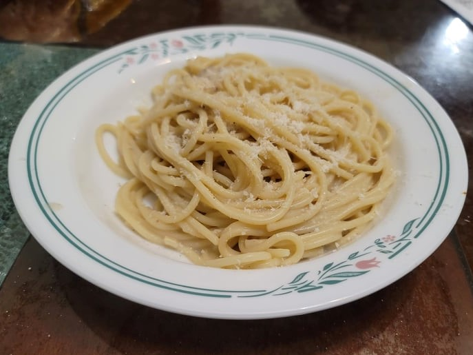

Cacio e Pepe

Ingredients:
- 1 lb Dried Spaghetti
- Salt, to taste or as needed
- 1 1/2 - 2 cups Pecorino, finely grated
- 1 tbsp Black peppercorns
Instructions:
- Bring a pot of water to a boil and add the salt and pasta. Cook until right before al dente.
- While the pasta is cooking, toast the peppercorns for about 3 minutes or until fragrant. Coarsely grind the pepper in a mortar and pestle and place back onto the pan with the heat off.
- When the pasta is about halfway done, add 1-2 ladles of pasta water to the pepper. Put the heat on high and start to reduce the pasta water.
- Ladle in some pasta water into the bowl of pecorino and mix until a paste is formed, adding more pasta water as needed.
- When the pasta is 1-2 minutes away from al dente, add it into the pan with pepper and water. Add some more pasta water if needed and finish cooking it in the pan until it is al dente.
- Once the pasta is al dente and cooked to your liking, turn off the heat and mix in the cheesy paste. Mix and stir or toss it in the pan. Emulsify the cheese and the pasta water to form a creamy sauce that clings to the pasta. Serve immediately.